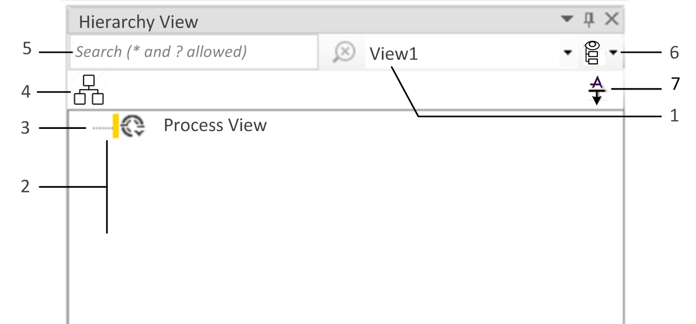
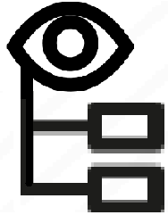

Hierarchy View Pad
Description
The Hierarchy View is an EcoStruxure Automation Expert pad. It behaves as the pads described in the Working with Pads topic and is accessible through .
This Hierarchy View pad allows the user to create two different kinds of hierarchy view:
-
Process view: It allows the user to create a view that reflects the plant breakdown and populate it with the application CAT, SubApp and SubCAT instances of the project.
This process view gives more options for organizing the application CAT instances than the Solution Explorer.
-
AVEVA Plant Model view: It can be synchronized with the Galaxy so that it shows the same hierarchy as the one created by the user in IDE.
Here are the actions available with this Hierarchy View pad:
- .
Check out the section right below for an overview of the pad.
Overview
The following graphic shows the layout of the Hierarchy View pad:

-
View selector
-
Expandable tree-view with containers referred to as Folder, CAT instances, SubApp instances and SubCAT instances.
NOTE: The application instances are displayed either with their instance name or with their asset tag name depending on the slider position. -
Root node
-
named Process View
-
or named after the name of the Galaxy that has just been configured.
-
-
icon visible when the setting is ticked.
-
Search bar, with an icon to clear the input.
-

icon giving access to the following actions:-
Create view
-
Rename view
-
Delete view
These actions are only available to process views.
-
-
 icon visible only when an AVEVA hierarchy view is currently selected. Click it to fetch the data from the AVEVA plant model view.
icon visible only when an AVEVA hierarchy view is currently selected. Click it to fetch the data from the AVEVA plant model view.
Limitations of AVEVA Plant Model view
Here are listed all the limitations restricting the use of AVEVA plant model view:
-
When the application objects are in Deployed state in the Galaxy, operations like rename or delete detailed in the Handling Application Instances topic, are NOT allowed in the AVEVA hierarchy view, nor in the Solution Explorer pad (unassign is allowed).
-
When the application objects are in Deployed state in the Galaxy, renaming their Asset Tag is NOT allowed.
-
When the relation type of a SubCAT is set to Aggregation in the ASP Asset Mapping editor, assigning that SubCAT to the AVEVA hierarchy view is NOT allowed.
-
When a CAT, SubCAT or SubApp is NOT assigned to an ASP template (in the ASP Asset Mapping editor), assigning it to the AVEVA hierarchy view is NOT allowed.